imager: an R package for image processing
1 Quick start
Here’s an example of imager in action:
library(imager)
file <- system.file('extdata/parrots.png',package='imager')
#system.file gives the full path for a file that ships with a R package
#if you already have the full path to the file you want to load just run:
#im <- load.image("/somedirectory/myfile.png")
im <- load.image(file)
plot(im) #Parrots!im.blurry <- isoblur(im,10) #Blurry parrots!
plot(im.blurry)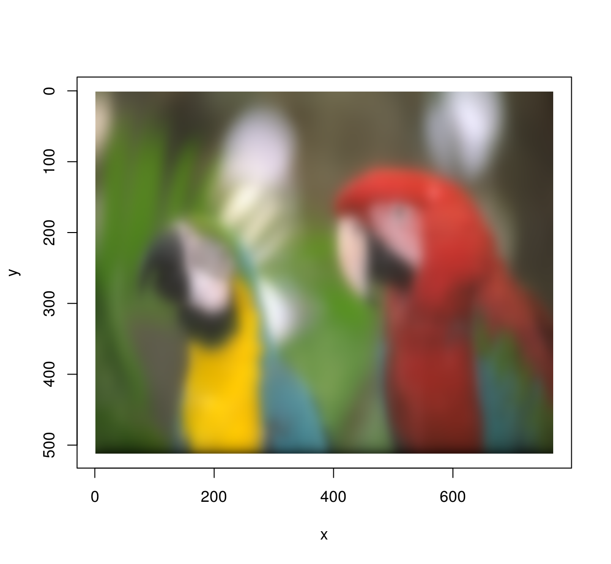
im.xedges <- deriche(im,2,order=2,axis="x") #Edge detector along x-axis
plot(im.xedges)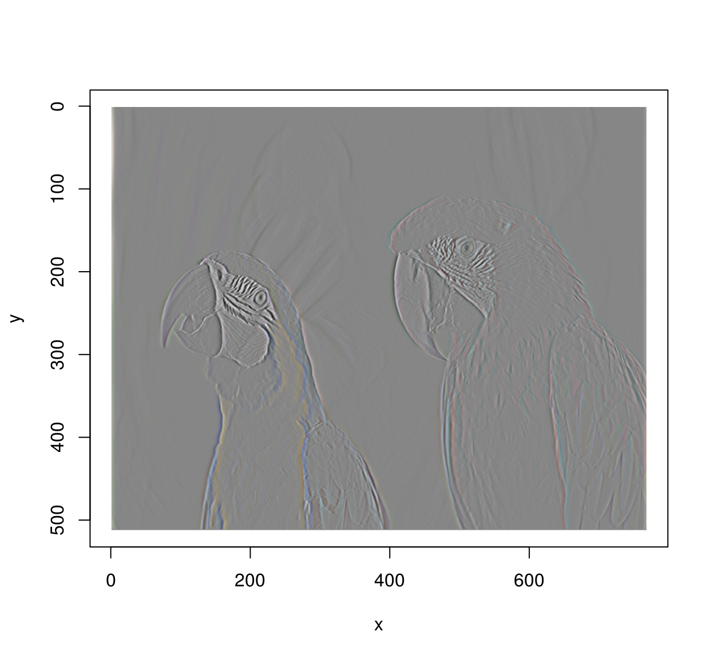
im.yedges <- deriche(im,2,order=2,axis="y") #Edge detector along y-axis
plot(im.yedges)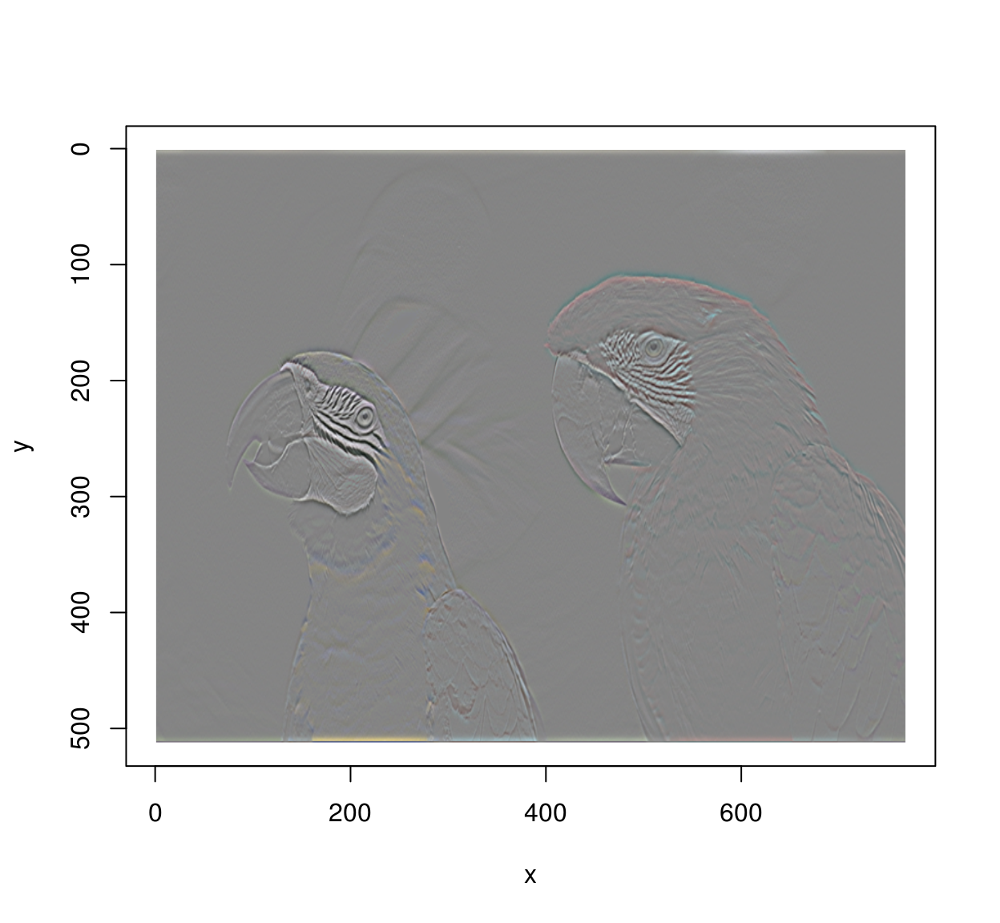
#Chain operations using the pipe operator (from magrittr)
deriche(im,2,order=2,axis="x") %>% deriche(2,order=2,axis="y") %>% plot#Another example of chaining: image gradient along x and y axes
layout(matrix(1:2,1,2));
grayscale(im) %>% get_gradient(axes="xy") %>% l_ply(plot)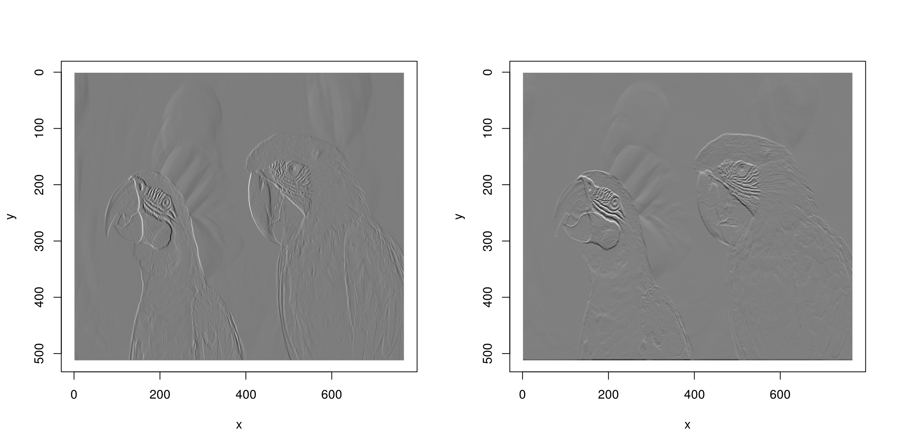
#Can load videos as well:
tennis <- load.image(system.file('extdata/tennis_sif.mpeg',package='imager'))
plot(tennis,frame=1)
plot(tennis,frame=5)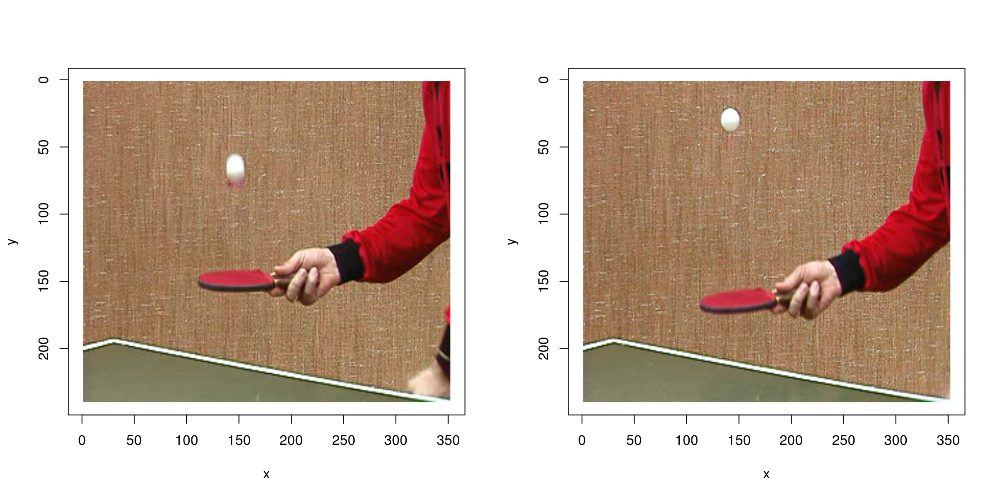
In the next example, we convert the video to grayscale, run a motion detector, and combine both videos to display them side-by-side:
tennis.g <- grayscale(tennis)
motion <- deriche(tennis.g,1,order=1,axis="z")^2 #Differentiate along z axis and square
combined <- list(motion/max(motion),tennis.g/max(tennis.g)) %>% imappend("x") #Paste the two videos togetherIn an interactive session you can run play(combined) to view the results.
2 How images are represented
Images are represented as 4D numeric arrays, which is consistent with CImg’s storage standard (it is unfortunately inconsistent with other R libraries, like spatstat, but converting between representations is easy). The four dimensions are labelled x,y,z,c. The first two are the usual spatial dimensions, the third one will usually correspond to depth or time, and the fourth one is colour. Remember the order, it will be used consistently in imager. If you only have grayscale images then the two extra dimensions are obviously pointless, but they won’t bother you much. Your objects will still be officially 4 dimensional, with two trailing flat dimensions. Pixels are stored in the following manner: we scan the image beginning at the upper-left corner, along the x axis. Once we hit the end of the scanline, we move to the next line. Once we hit the end of the screen, we move to the next frame (increasing z) and repeat the process. If we have several colour channels, then once we’re done with the first colour channel we move to the next one. All in all the different dimensions are represented in the x,y,z,c order. In R the object is represented as a 4D array. Here’s an example with a grayscale image:
parrots <- load.image(system.file('extdata/parrots.png',package='imager'))
gray.parrots <- grayscale(parrots)
dim(gray.parrots)## [1] 768 512 1 1and a colour image:
dim(parrots)## [1] 768 512 1 3and finally a video, also in colour:
dim(tennis)## [1] 352 240 150 33 Coordinates
CImg uses standard image coordinates: the origin is at the top left corner, with the x axis pointing right and the y axis pointing down. imager uses the same coordinate system, except the origin is now (1,1) and not (0,0) (the reason being that R indices start at 1 and not at 0). The number of pixels along the x axis is called the width, along the y axis it’s height, along the z axis it’s depth and finally the number of colour channels is called “spectrum”.
width(parrots)## [1] 768height(parrots)## [1] 512depth(parrots)## [1] 1spectrum(parrots)## [1] 34 The cimg class
Imager uses the “cimg” class for its images. “cimg” is just a regular 4d array with an S3 class tacked on so we can have custom plot, print, etc. To promote an array to a “cimg” object, use as.cimg:
noise <- array(runif(5*5*5*3),c(5,5,5,3)) #5x5 pixels, 5 frames, 3 colours. All noise
noise <- as.cimg(noise)You can treat the object as you would any other array:
#Arithmetic
sin(noise) + 3*noise ## [1] "Image. Width: 5 pix Height 5 pix Depth 5 Colour channels 3\n"#Subsetting
noise[,,,1] #First colour channel## [1] "Image. Width: 5 pix Height 5 pix Depth 5 Colour channels 1\n"dim(noise[1:4,,,] )## [1] 4 5 5 3and you can convert it to a data.frame:
head(as.data.frame(parrots))## x y z cc value
## 1 1 1 1 1 116
## 2 2 1 1 1 117
## 3 3 1 1 1 120
## 4 4 1 1 1 119
## 5 5 1 1 1 120
## 6 6 1 1 1 120which makes life easier if you want to use ggplot2 for plotting.
4.1 Displaying images and videos
To get a standard R plot use the plot function:
plot(parrots)plot(tennis,frame=1) 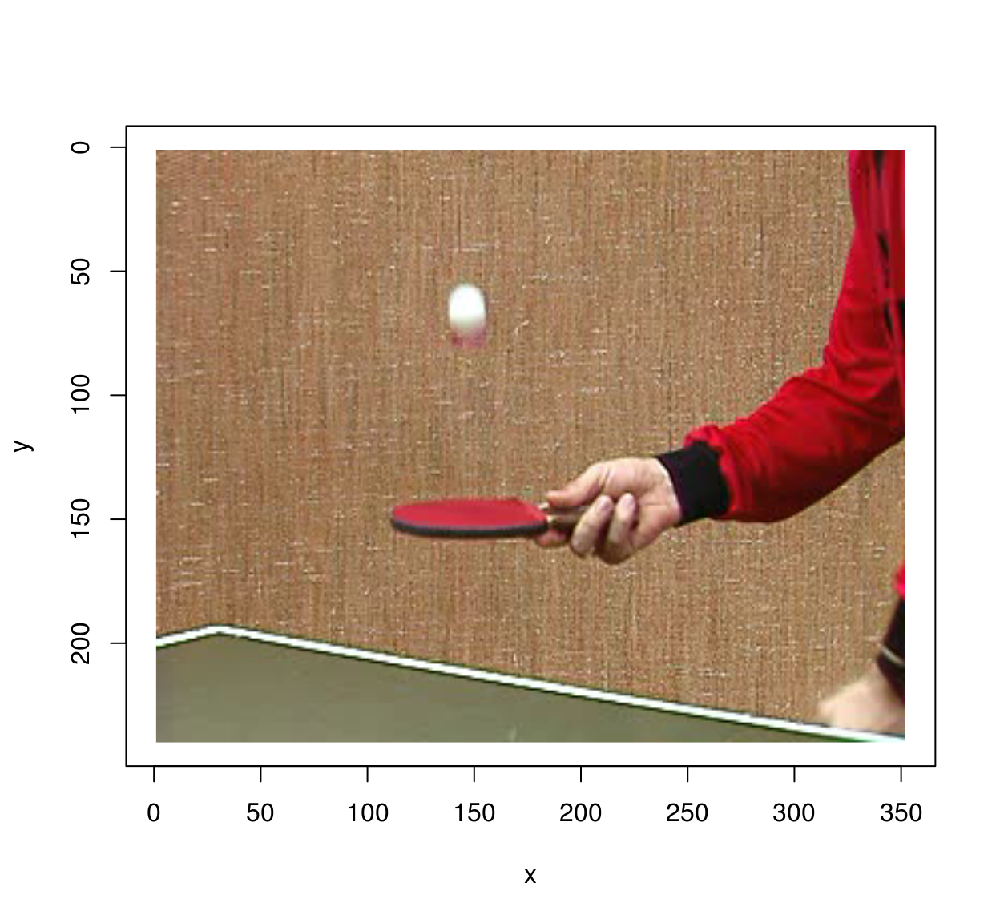
In addition imager provides display() (for images) and play() (for videos), which are much faster C++ functions for quickly viewing your results.
5 Loading and saving
Use load.image and save.image. You’ll most likely need imagemagick on your path somewhere for images, and ffmpeg for videos. CImg supports very few formats natively.
6 Splitting and concatenating images
One often needs to perform separate computations on each channel of an image, or on each frame, each line, etc. This can be achieved using a loop or more conveniently using imsplit:
imsplit(parrots,"c") #A list with three elements corresponding to the three channels## [[1]]
## [1] "Image. Width: 768 pix Height 512 pix Depth 1 Colour channels 1\n"
##
## [[2]]
## [1] "Image. Width: 768 pix Height 512 pix Depth 1 Colour channels 1\n"
##
## [[3]]
## [1] "Image. Width: 768 pix Height 512 pix Depth 1 Colour channels 1\n"imsplit(parrots,"c") %>% laply(mean) #Mean pixel value in each channel## [1] 121.6621 109.5960 75.7940imsplit(parrots,"x") %>% laply(mean) %>% head #Mean pixel value in each line (across all channels)## [1] 93.50716 93.90885 94.28646 94.49089 94.55208 94.56445The inverse operation is called imappend: it takes a list of images and concatenates them along the dimension of your choice.
#Sample functions and turn them into separate R,G,B channels
R <- as.cimg(function(x,y) sin(cos(3*x*y)),100,100)
G <- as.cimg(function(x,y) sin(cos(3*x*y + pi/2)),100,100)
B <- as.cimg(function(x,y) exp(-.03*x),100,100)
trippy <- imappend(list(R,G,B),"c") #Bind the three channels into one image
plot(trippy)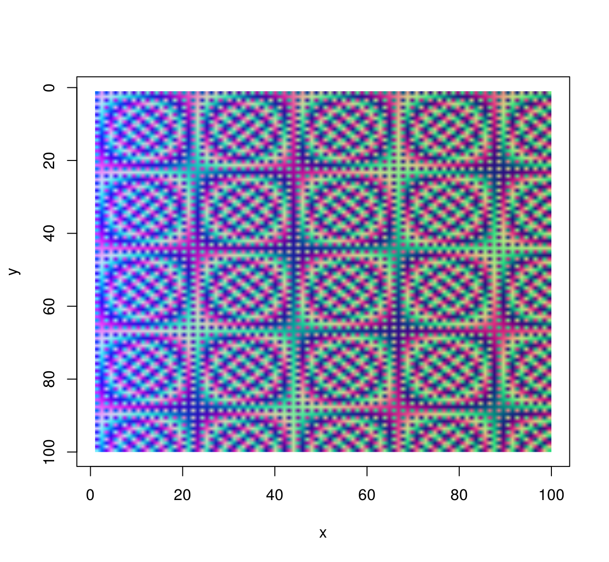
7 Colour spaces
To convert from RGB to HSL/HSV/HSI/YUV/YCbCR, run RGBto[…], as in the following example:
parrots.hsl <- RGBtoHSL(parrots)
chan <- channels(parrots.hsl) #Extract the channels as a list of images
names(chan) <- c("H","S","L")
#Plot
layout(matrix(1:3,1,3))
l_ply(names(chan),function(nm) plot(chan[[nm]],main=nm))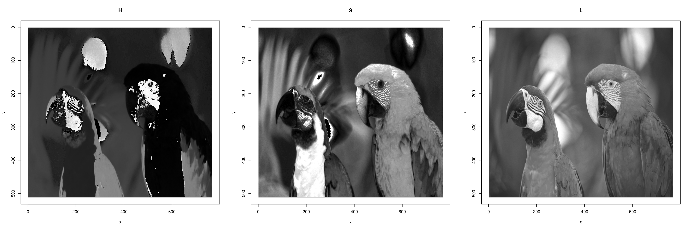
The reverse operation is done by running […]toRGB. Note that all display functions assume that your image is in RGB.
YUVtoRGB(trippy) %>% plot
If you have a colour image, you convert it to grayscale using the grayscale function. If you have a grayscale image, add colour channels using add.colour:
grayscale(parrots) %>% spectrum## [1] 1#Image has only one channel (luminance)
grayscale(parrots) %>% add.colour %>% spectrum## [1] 3#Image is still in gray tones but has R,G,B channels 8 Resizing, rotation, etc.
Functions for resizing and rotation should be fairly intuitive:
thmb <- resize(parrots,round(width(parrots)/10),round(height(parrots)/10))
plot(thmb,main="Thumbnail") #Pixellated parrots#Same as above: negative arguments are interpreted as percentages
thmb <- resize(parrots,-10,-10)
rotate(parrots,30) %>% plot(main="Rotating")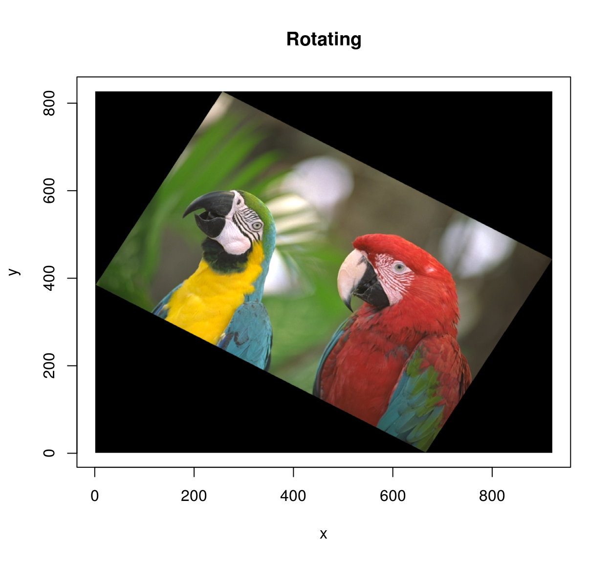
shift(parrots,40,20) %>% plot(main="Shifting")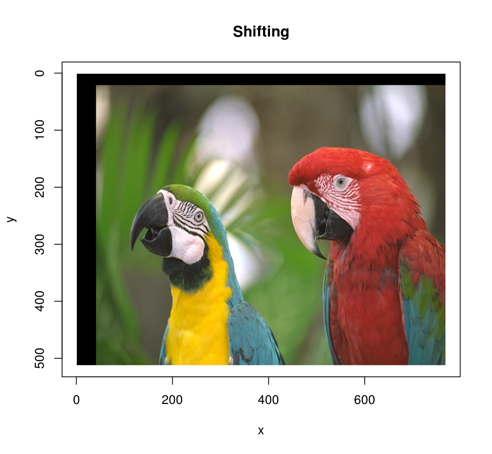
shift(parrots,100,100,boundary=1) %>% plot(main="Shifting (Neumann boundaries)")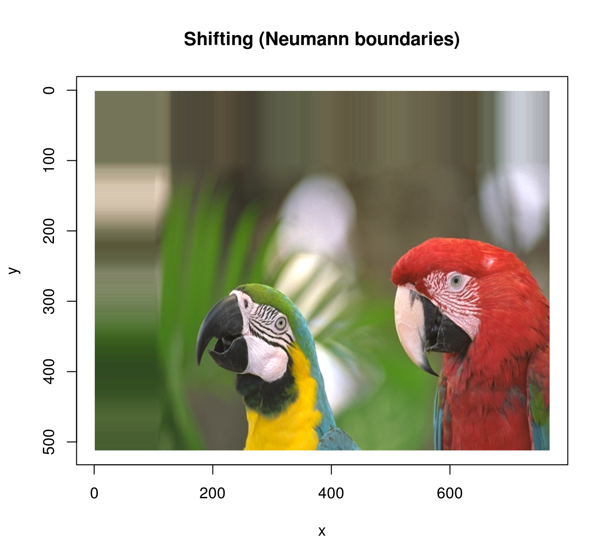
shift(parrots,100,100,boundary=2) %>% plot(main="Shifting (circular)")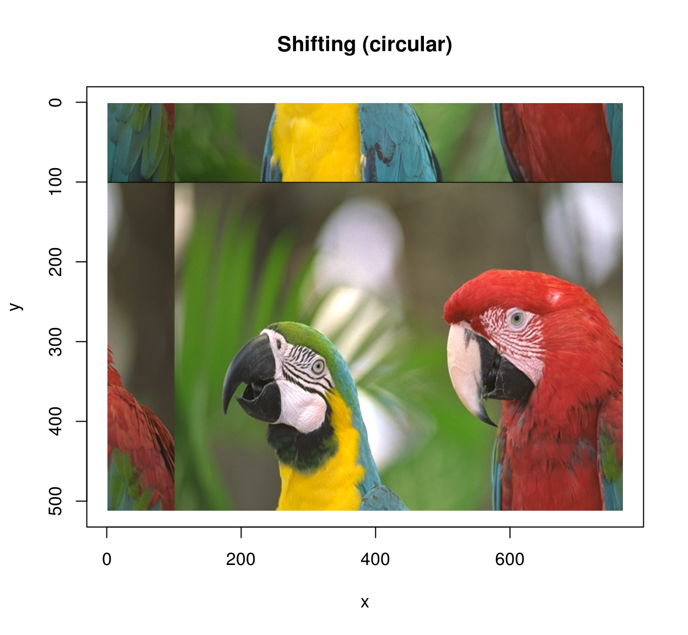
You can pad an image using “pad”:
pad(parrots,axis="y",140) %>% plot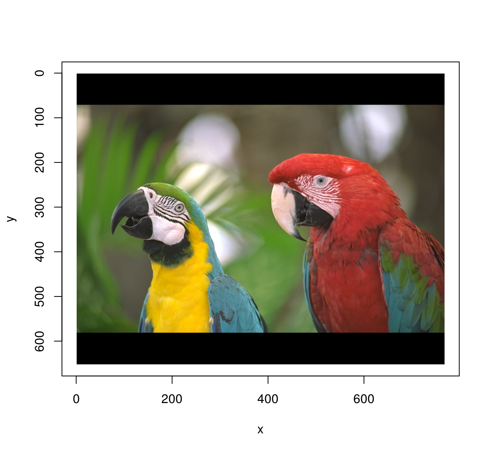
pad(parrots,axis="y",140,pos=-1) %>% plot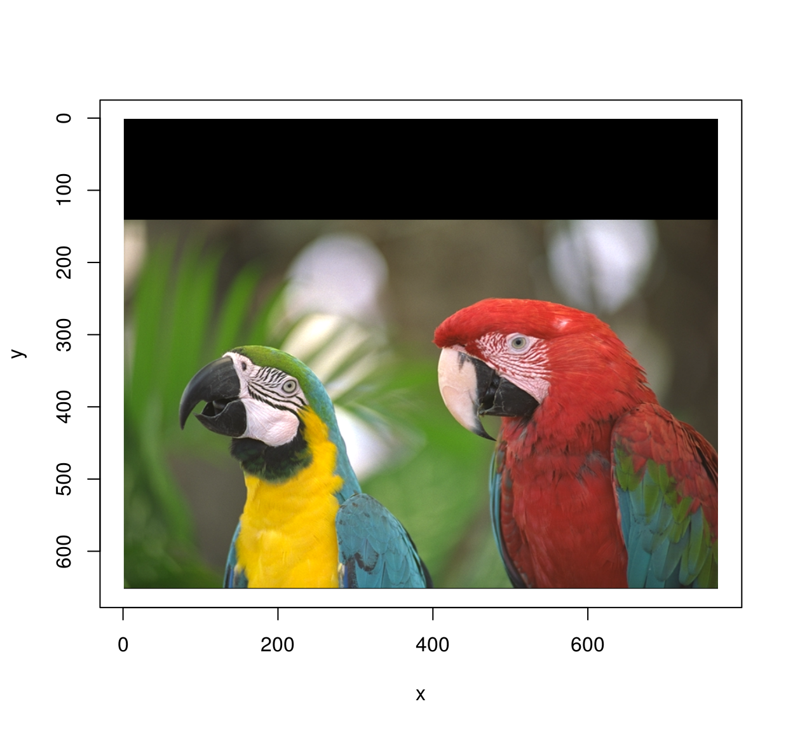
autocrop will remove any extra padding:
#The argument to autocrop is the colour of the background it needs to remove
pad(parrots,axis="y",140,pos=-1) %>% autocrop(c(0,0,0)) %>% plot9 Warping
Warping maps the pixels of the input image to a different location in the output. Scaling is a special case of warping, so is shifting. Warping relies on a map: \(M(x,y) = (x',y')\)
that describes where to send pixel (x,y). Shifting the image corresponds to adding a constant to the coordinates: \(M(x,y) = (x+\delta_x,y+\delta_y)\)
In imager:
map.shift <- function(x,y) list(x=x+10,y=y+30)
imwarp(parrots,map=map.shift) %>% plotThe map function should take (x,y) as arguments and output a named list with values (x,y).
The warping algorithm has two modes, “forward” and “backward”. In forward mode you go through all \((x,y)\) pixels in the source, and paint the corresponding location \(M(x,y)\) in the target image. This may result in unpainted pixels, as in the following example:
map.scale <- function(x,y) list(x=1.5*x,y=1.5*y)
imwarp(parrots,map=map.scale) %>% plot(main="Forward mode")In backward mode you go through all pixels \((x',y')\) in the target image, and look up their ancestor \(M^{-1}(x',y')\) in the source image. Backward mode has no missing pixel problems, but now you need to define the inverse map and set the “direction” argument to “backward”.
map.scale.bw <- function(x,y) list(x=x/1.5,y=y/1.5)
imwarp(parrots,map=map.scale.bw,direction="backward") %>% plot(main="Backward mode")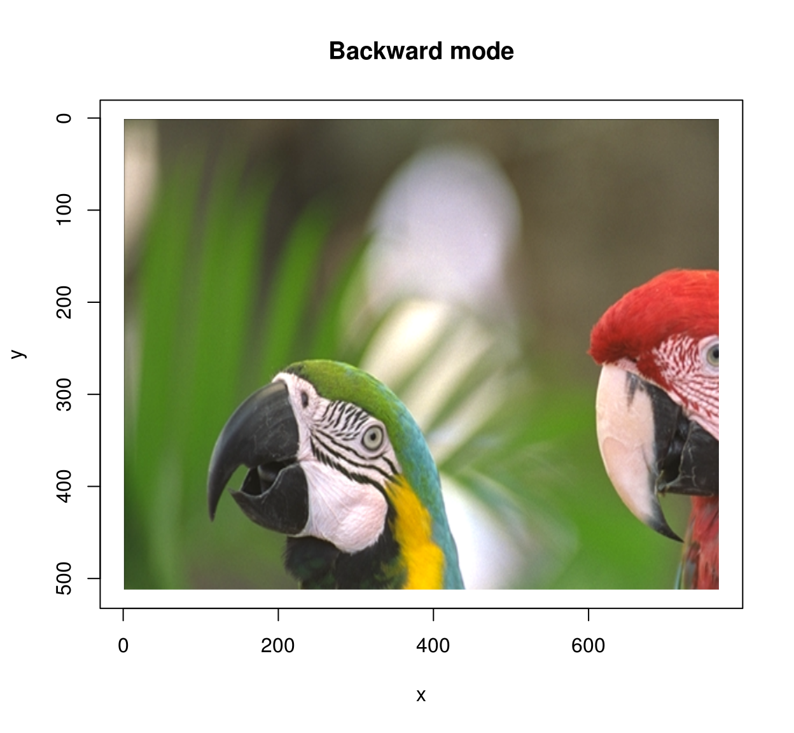
Of course shifting and scaling things is boring and the whole point of warping is to do things like that:
map <- function(x,y) list(x=exp(y/600)*x,y=y*exp(-sin(x/40)))
imwarp(parrots,map=map,direction="forward") %>% plot()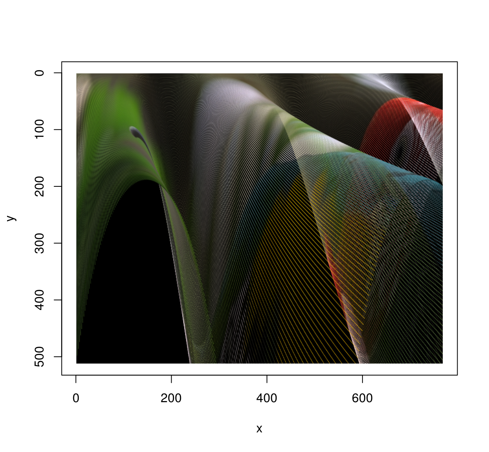
See ?imwarp for more. Note that 3D warping is possible as well.
10 Lagged operators
To compute the difference between successive images in a video, you can use the shift operator:
#Compute difference between two successive frames (at lag 1)
(shift(tennis,delta_z=1)-tennis) %>% plot(frame=2,main="Difference betw. frames 2 and 1")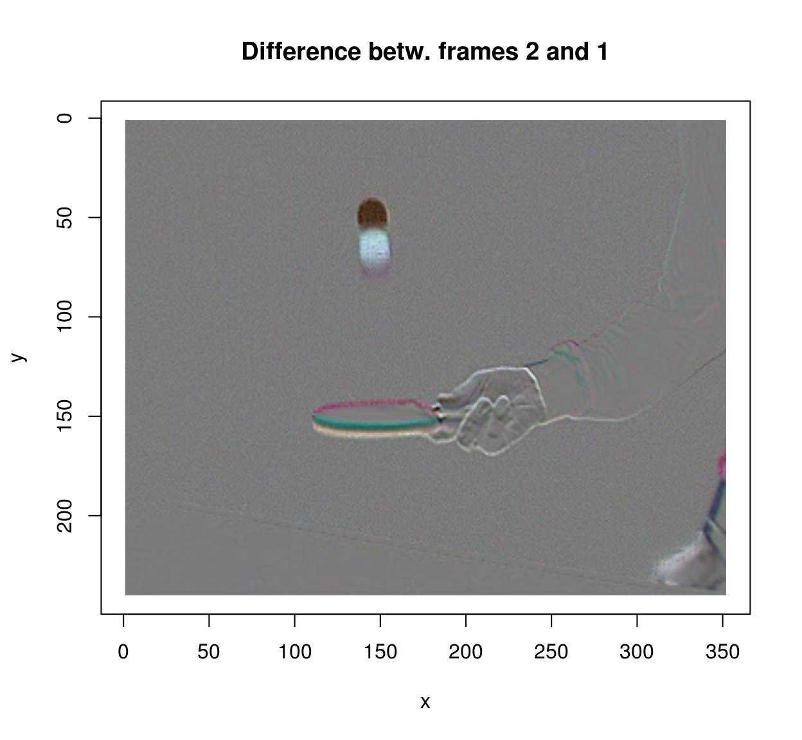
#Compute difference between frames (at lag 3)
(shift(tennis,delta_z=3)-tennis) %>% plot(frame=4,main="Difference between frames 3 and 1")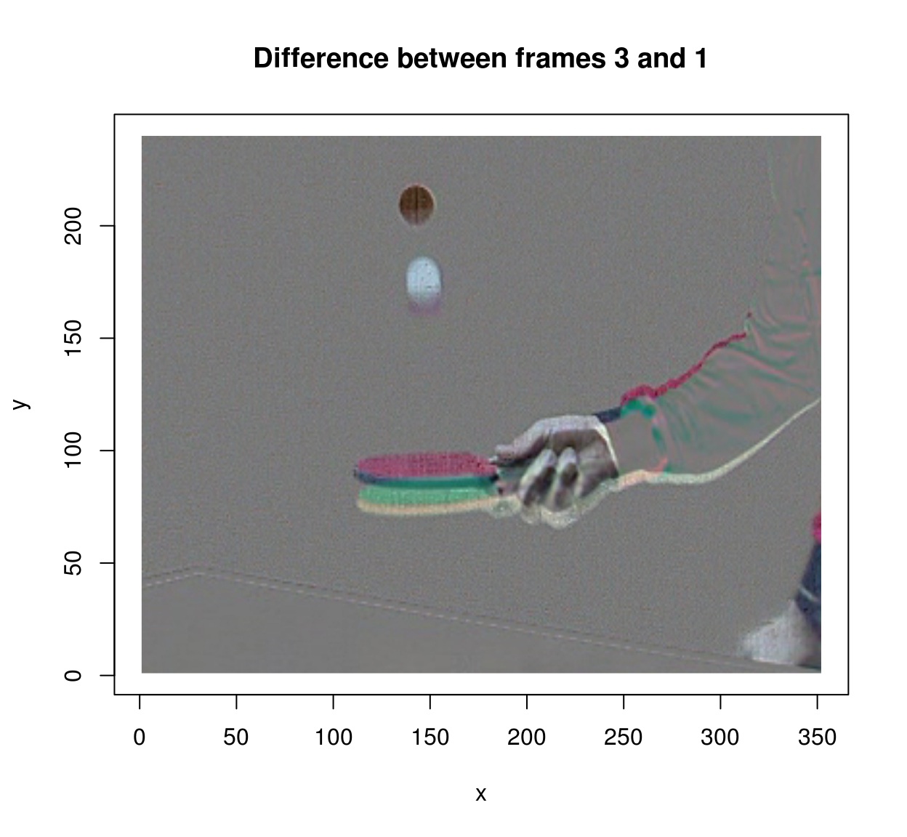
#note that shift uses interpolation. that makes it relatively slow, but one advantage is that it allows non-integer lags:
#shift(tennis,delta_z=3.5)-tennis
#is valid